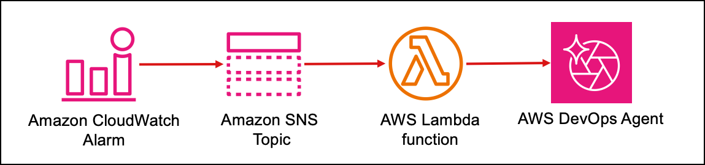

This demo showcases how AWS DevOps Agent automatically investigates network incidents using CloudTrail, VPC Flow Logs, ELB Access Logs, and PCAP analysis via a custom MCP server on AgentCore Runtime.
Security groups, route tables, VPC endpoints, ALB backends, and TLS certificate mismatches — each triggers a real network failure.
CloudWatch alarms trigger webhooks to DevOps Agent, which automatically investigates using AWS APIs, logs, and MCP tools.
Scenario 6 captures network packets and analyzes TLS handshakes, SNI mismatches, and certificate details using a custom PCAP MCP server.
Used by: Networking Scenarios
PCAPmcpLoading...OAuth Client CredentialsLoading...Loading...Loading...When a CloudWatch alarm fires, the webhook Lambda sends an HMAC-signed notification to DevOps Agent, which automatically starts an investigation. The diagram below shows the integration flow.

Go to the Agent Space console, navigate to Capabilities → Webhooks → Add webhook, and follow the instructions to generate a webhook URL and HMAC secret. Paste them below.
DevOps Agent does not have S3 access by default. The Agent Space IAM role has been configured with explicit s3:GetObject and s3:ListBucket permissions on these buckets.
Loading...Loading...Loading...The health check app on EC2 monitors 5 connectivity paths. When a break is triggered, the corresponding check fails, publishes a CloudWatch metric, and the alarm fires within 1–2 minutes — triggering DevOps Agent via webhook.
| # | Scenario | What Breaks | Traffic Path | Check Interval | Alarm | Alarm Type | Investigation Source |
|---|---|---|---|---|---|---|---|
| 1 | Security Group Rule | Revokes inbound MySQL (3306) on RDS SG | EC2 → ✗ RDS SG → RDS | 5s | alarm-1ConnectivityFailure (rds) > 0 for 60s |
Custom | CloudTrail: RevokeSecurityGroupIngress |
| 2 | NAT Gateway Route | Deletes 0.0.0.0/0 route from private RT | EC2 → ✗ No route → NAT GW | 15s | alarm-2ConnectivityFailure (nat) > 0 for 60s |
Custom | CloudTrail: DeleteRoute |
| 3 | VPC Endpoint Policy | Sets S3 Gateway Endpoint policy to Deny * | EC2 → S3 Endpoint → ✗ Deny | 10s | alarm-3ConnectivityFailure (s3) > 0 for 60s |
Custom | CloudTrail: ModifyVpcEndpoint |
| 4 | Bedrock Endpoint | Removes subnet associations from Interface Endpoint | EC2 → ✗ No ENI → Bedrock | 10s | alarm-4ConnectivityFailure (bedrock) > 0 for 60s |
Custom | CloudTrail: ModifyVpcEndpoint |
| 5 | ALB Backend Failure | Stops nginx + app on EC2 (opaque script) | Users → ALB → ✗ 502 → EC2 (down) | 30s (traffic gen) | alarm-5HTTPCode_ELB_5XX_Count > 0 for 60s |
Native (ALB) | ELB Access Logs in S3 |
| 6 | TLS/SNI Mismatch + PCAP | Poisons /etc/hosts → TLS to wrong IP (opaque script) | EC2 → DNS → ✗ TLS mismatch | 10s | alarm-6ConnectivityFailure (outbound-https) > 0 for 60s |
Custom | PCAP MCP Server (baseline vs incident) |
All alarms use TreatMissingData=notBreaching — they auto-recover to OK after fix when metric data stops.
Revoke RDS inbound rule (port 3306), breaking DB connectivity. Agent investigates via CloudTrail RevokeSecurityGroupIngress.
Delete NAT GW default route (0.0.0.0/0), breaking outbound internet. Agent investigates via CloudTrail DeleteRoute.
Restrict S3 Gateway Endpoint policy to Deny, breaking S3 access. Agent investigates via CloudTrail ModifyVpcEndpoint.
Remove Bedrock Interface Endpoint subnets, breaking AI feature. Agent investigates via CloudTrail ModifyVpcEndpoint.
Stop backend application, causing ALB to return 502 Bad Gateway. Agent analyzes ELB Access Logs from S3 to identify failing target.
DNS poisoning redirects Location Service endpoint to local nginx, causing TLS cert mismatch. Agent analyzes PCAP via MCP Server.